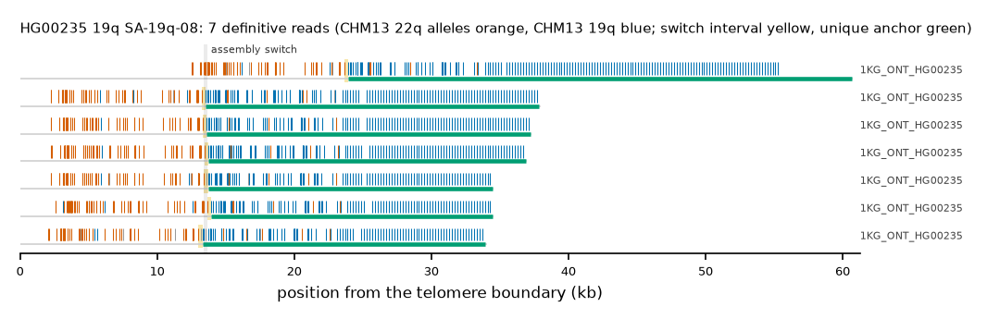

HG00235 19q: SA-19q-08
Claim HG00235|19q|SA-19q-08. All claims
- cohort
- 1000 Genomes ONT
- individual
- HG00235
- haplotype
- hap1
- arm
- 19q
- allele
- SA-19q-08 (foreign)
- model
- donor CHM13 22q, proximal CHM13 19q, recipient CHM13 19q, pattern DP
- claimed end(s)
HG00235#1#CM094378.1#R- assembly switch
- 13,490 bp from the telomere boundary; on CHM13 chr19:61694373; own-window projection 13409-13663 bp
- v1 verdict
- confirmed (confirmed)
- definitive tier
- definitive
- reads
- 7 conclusive switch-concordant, 4 discordant, 0 contradicting, 11 consistent; 7 definitive (1KG_ONT_HG00235)
- by tier
- definitive:7;conclusive_discordant:4;consistent:11
- source
- https://ftp.1000genomes.ebi.ac.uk/vol1/ftp/data_collections/1KG_ONT_VIENNA/t2t/HG00235.t2t.cram
- note
- confirmed:robust; keep

Conclusive and contradicting reads (11)
11 further reads are consistent (switch test passed, but no terminal telomere, anchor or integrity); they are
listed in reads.tsv.gz. Switch: 95% interval in subtelomere coordinates (kb from the
telomere boundary) and projected on CHM13 19q. Each samtools command prints the read's record
from its public file (CRAM: add the CHM13 v2.0 FASTA as -T).
| read | dataset | tier | length | switch (subtelomere, kb) | switch on CHM13 | donor units / purity | proximal units / purity | anchor (CHM13, MAPQ, unique) | own-assembly best end | fetch |
|---|---|---|---|---|---|---|---|---|---|---|
be987867-7639-41c6-8710-268f7d590684 | 1KG_ONT_HG00235 | definitive | 61,174 | 23.7-23.9 | chr19:61694201-61694456 | 55 / 0.96 | 160 / 0.97 | chr19:61657305-61694201, 60, 32.0 kb | HG00235#1#CM094378.1#R (94.5%) ✓ | samtoolssamtools view -F 0x900 -T chm13v2.0.fa.gz -X 'https://ftp.1000genomes.ebi.ac.uk/vol1/ftp/data_collections/1KG_ONT_VIENNA/t2t/HG00235.t2t.cram' 'https://ftp.1000genomes.ebi.ac.uk/vol1/ftp/data_collections/1KG_ONT_VIENNA/t2t/HG00235.t2t.cram.crai' 'chr19:61702365-61707364' | awk -v r='be987867-7639-41c6-8710-268f7d590684' '$1==r' |
ef6b7aef-cdca-4316-bd24-1a88e9612229 | 1KG_ONT_HG00235 | definitive | 42,224 | 13.3-13.5 | chr19:61694201-61694452 | 54 / 0.94 | 122 / 0.96 | chr19:61669793-61694201, 60, 19.5 kb | HG00235#1#CM094378.1#R (95.3%) ✓ | samtoolssamtools view -F 0x900 -T chm13v2.0.fa.gz -X 'https://ftp.1000genomes.ebi.ac.uk/vol1/ftp/data_collections/1KG_ONT_VIENNA/t2t/HG00235.t2t.cram' 'https://ftp.1000genomes.ebi.ac.uk/vol1/ftp/data_collections/1KG_ONT_VIENNA/t2t/HG00235.t2t.cram.crai' 'chr19:61702365-61707364' | awk -v r='ef6b7aef-cdca-4316-bd24-1a88e9612229' '$1==r' |
1442a406-2542-41b1-87a3-40148b0d36f6 | 1KG_ONT_HG00235 | definitive | 40,205 | 13.3-13.6 | chr19:61694201-61694451 | 56 / 0.98 | 119 / 0.96 | chr19:61670655-61694201, 60, 18.6 kb | HG00235#1#CM094378.1#R (96.1%) ✓ | samtoolssamtools view -F 0x900 -T chm13v2.0.fa.gz -X 'https://ftp.1000genomes.ebi.ac.uk/vol1/ftp/data_collections/1KG_ONT_VIENNA/t2t/HG00235.t2t.cram' 'https://ftp.1000genomes.ebi.ac.uk/vol1/ftp/data_collections/1KG_ONT_VIENNA/t2t/HG00235.t2t.cram.crai' 'chr19:61702365-61707364' | awk -v r='1442a406-2542-41b1-87a3-40148b0d36f6' '$1==r' |
e4b81d09-fbc6-4e5b-a5df-a41b6424c948 | 1KG_ONT_HG00235 | definitive | 40,171 | 13.5-13.7 | chr19:61694201-61694455 | 57 / 0.98 | 116 / 0.96 | chr19:61671065-61694201, 60, 18.2 kb | HG00235#1#CM094378.1#R (96.8%) ✓ | samtoolssamtools view -F 0x900 -T chm13v2.0.fa.gz -X 'https://ftp.1000genomes.ebi.ac.uk/vol1/ftp/data_collections/1KG_ONT_VIENNA/t2t/HG00235.t2t.cram' 'https://ftp.1000genomes.ebi.ac.uk/vol1/ftp/data_collections/1KG_ONT_VIENNA/t2t/HG00235.t2t.cram.crai' 'chr19:61702365-61707364' | awk -v r='e4b81d09-fbc6-4e5b-a5df-a41b6424c948' '$1==r' |
0e4bc5cd-fd25-442e-bfec-e7d49fe215db | 1KG_ONT_HG00235 | definitive | 44,545 | 13.4-13.8 | chr19:61694059-61694447 | 55 / 0.96 | 104 / 0.95 | chr19:61673361-61694059, 60, 15.8 kb | HG00235#1#CM094378.1#R (95.8%) ✓ | samtoolssamtools view -F 0x900 -T chm13v2.0.fa.gz -X 'https://ftp.1000genomes.ebi.ac.uk/vol1/ftp/data_collections/1KG_ONT_VIENNA/t2t/HG00235.t2t.cram' 'https://ftp.1000genomes.ebi.ac.uk/vol1/ftp/data_collections/1KG_ONT_VIENNA/t2t/HG00235.t2t.cram.crai' 'chr19:61702365-61707364' | awk -v r='0e4bc5cd-fd25-442e-bfec-e7d49fe215db' '$1==r' |
00d2d62e-f335-47bf-a2ad-001a9ee4deec | 1KG_ONT_HG00235 | definitive | 36,005 | 13.0-13.3 | chr19:61694059-61694438 | 52 / 0.96 | 100 / 0.94 | chr19:61673384-61694059, 60, 15.7 kb | HG00235#1#CM094378.1#R (91.7%) ✓ | samtoolssamtools view -F 0x900 -T chm13v2.0.fa.gz -X 'https://ftp.1000genomes.ebi.ac.uk/vol1/ftp/data_collections/1KG_ONT_VIENNA/t2t/HG00235.t2t.cram' 'https://ftp.1000genomes.ebi.ac.uk/vol1/ftp/data_collections/1KG_ONT_VIENNA/t2t/HG00235.t2t.cram.crai' 'chr19:61702365-61707364' | awk -v r='00d2d62e-f335-47bf-a2ad-001a9ee4deec' '$1==r' |
a63c1211-d486-455e-8057-c6a101c3aec1 | 1KG_ONT_HG00235 | definitive | 38,169 | 13.7-13.9 | chr19:61694201-61694455 | 56 / 0.93 | 103 / 0.95 | chr19:61673653-61694201, 60, 15.6 kb | HG00235#1#CM094378.1#R (95.2%) ✓ | samtoolssamtools view -F 0x900 -T chm13v2.0.fa.gz -X 'https://ftp.1000genomes.ebi.ac.uk/vol1/ftp/data_collections/1KG_ONT_VIENNA/t2t/HG00235.t2t.cram' 'https://ftp.1000genomes.ebi.ac.uk/vol1/ftp/data_collections/1KG_ONT_VIENNA/t2t/HG00235.t2t.cram.crai' 'chr19:61702365-61707364' | awk -v r='a63c1211-d486-455e-8057-c6a101c3aec1' '$1==r' |
47d7ca75-1a33-425d-a204-49c97c58c673 | 1KG_ONT_HG00235 | conclusive, switch-discordant | 49,674 | 5.5-9.0 | chr19:61696884-61700304 | 32 / 0.81 | 181 / 0.93 | chr19:61657307-61696871, 60, 34.6 kb | HG00235#2#CM094405.1#R (95.2%) (not claimed end) | samtoolssamtools view -F 0x900 -T chm13v2.0.fa.gz -X 'https://ftp.1000genomes.ebi.ac.uk/vol1/ftp/data_collections/1KG_ONT_VIENNA/t2t/HG00235.t2t.cram' 'https://ftp.1000genomes.ebi.ac.uk/vol1/ftp/data_collections/1KG_ONT_VIENNA/t2t/HG00235.t2t.cram.crai' 'chr19:61702365-61707364' | awk -v r='47d7ca75-1a33-425d-a204-49c97c58c673' '$1==r' |
ff293591-4361-4f63-87ad-d2ed3b969c6f | 1KG_ONT_HG00235 | conclusive, switch-discordant | 34,544 | 7.1-7.3 | chr19:61699911-61700137 | 34 / 0.82 | 124 / 0.90 | chr19:61673733-61699911, 60, 21.2 kb | HG00235#2#CM094405.1#R (96.5%) (not claimed end) | samtoolssamtools view -F 0x900 -T chm13v2.0.fa.gz -X 'https://ftp.1000genomes.ebi.ac.uk/vol1/ftp/data_collections/1KG_ONT_VIENNA/t2t/HG00235.t2t.cram' 'https://ftp.1000genomes.ebi.ac.uk/vol1/ftp/data_collections/1KG_ONT_VIENNA/t2t/HG00235.t2t.cram.crai' 'chr19:61702365-61707364' | awk -v r='ff293591-4361-4f63-87ad-d2ed3b969c6f' '$1==r' |
0ebb63a7-fb67-4e78-92bf-615bfc5cc335 | 1KG_ONT_HG00235 | conclusive, switch-discordant | 35,666 | 6.9-10.3 | chr19:61696884-61700308 | 31 / 0.81 | 100 / 0.90 | chr19:61678293-61696884, 60, 13.7 kb | HG00235#2#CM094405.1#R (94.4%) (not claimed end) | samtoolssamtools view -F 0x900 -T chm13v2.0.fa.gz -X 'https://ftp.1000genomes.ebi.ac.uk/vol1/ftp/data_collections/1KG_ONT_VIENNA/t2t/HG00235.t2t.cram' 'https://ftp.1000genomes.ebi.ac.uk/vol1/ftp/data_collections/1KG_ONT_VIENNA/t2t/HG00235.t2t.cram.crai' 'chr19:61702365-61707364' | awk -v r='0ebb63a7-fb67-4e78-92bf-615bfc5cc335' '$1==r' |
fc7ac710-563b-434a-b6d9-cb75a984c14e | 1KG_ONT_HG00235 | conclusive, switch-discordant | 26,826 | 6.7-7.0 | chr19:61699911-61700140 | 33 / 0.82 | 69 / 0.83 | chr19:61685042-61699911, 60, 10.8 kb | HG00235#2#CM094405.1#R (93.5%) (not claimed end) | samtoolssamtools view -F 0x900 -T chm13v2.0.fa.gz -X 'https://ftp.1000genomes.ebi.ac.uk/vol1/ftp/data_collections/1KG_ONT_VIENNA/t2t/HG00235.t2t.cram' 'https://ftp.1000genomes.ebi.ac.uk/vol1/ftp/data_collections/1KG_ONT_VIENNA/t2t/HG00235.t2t.cram.crai' 'chr22:51316114-51323113' | awk -v r='fc7ac710-563b-434a-b6d9-cb75a984c14e' '$1==r' |
Files
CRAM/BAM on CHM13 v2.0, BAM on the person's own assembly windows and the window FASTA: release asset subtel_read_evidence_v1_1KG_ONT.tar.gz, directory read_evidence_v1/1KG_ONT/HG00235__19q__SA-19q-08/ (downloads).
Re-derive this verdict
git clone https://github.com/jlanej/human-subtelomere-atlas && cd human-subtelomere-atlas
evidence/replicate_claim.sh 'HG00235|19q|SA-19q-08'The script fetches the cited reads from the public source by region and read ID, re-runs the frozen criteria and compares every per-read and claim verdict with this page (details).